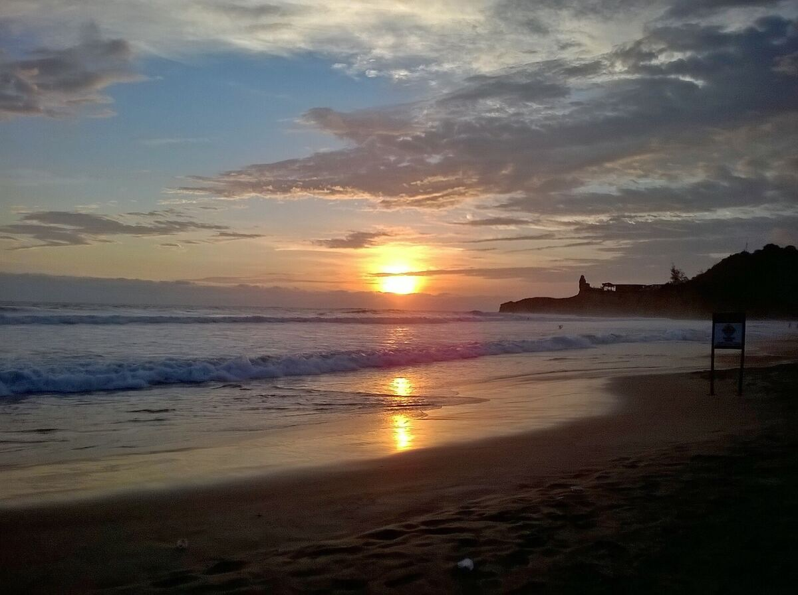
La Costa
La Costa
Playas, bananeras y camaroneras.
Rotary International · Distrito 4400
Somos jóvenes líderes de Samborondón, Ecuador, sirviendo a nuestra comunidad y haciendo amigos en todo el mundo Rotaract.
01 · El país
Un país pequeño en la costa del Pacífico de Sudamérica.
Guayaquil es la ciudad más grande.
02 · Cuatro mundos
En un solo día puedes ir de la playa a un volcán.

Playas, bananeras y camaroneras.
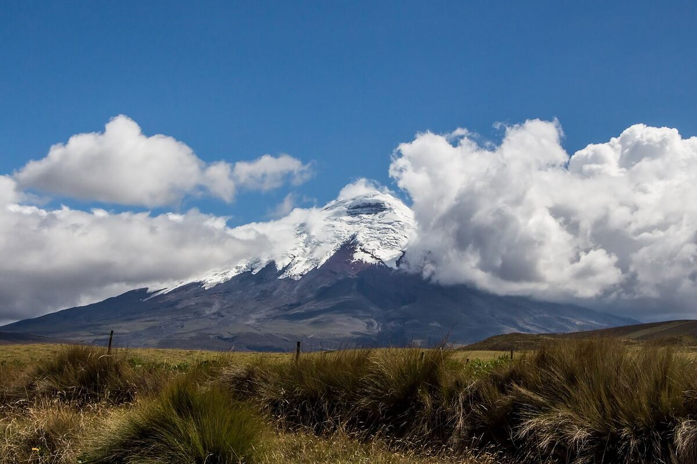
Volcanes nevados y Quito.
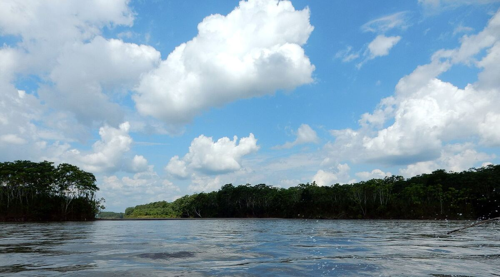
Selva tropical al oriente.
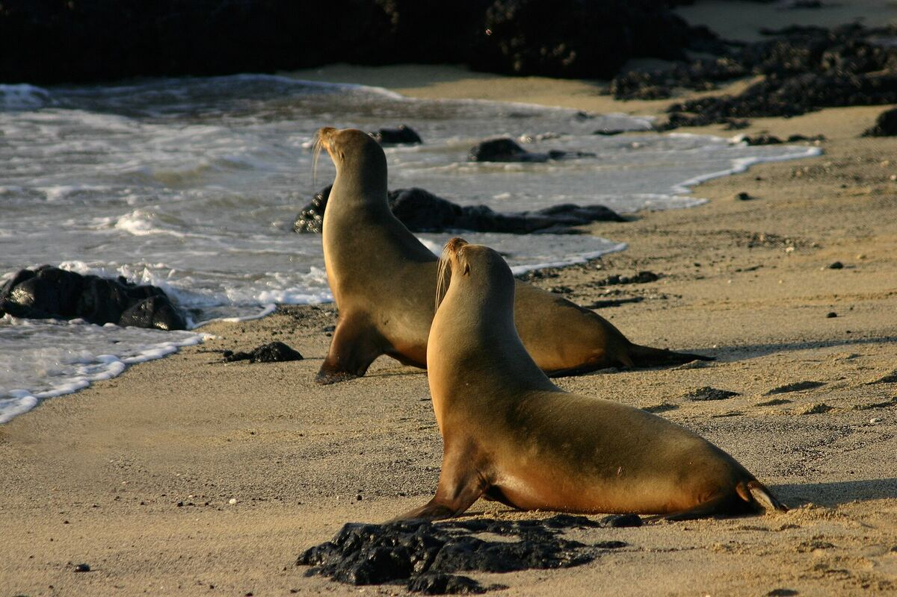
Islas volcánicas.
03 · Postales
Algunos lugares que amamos.
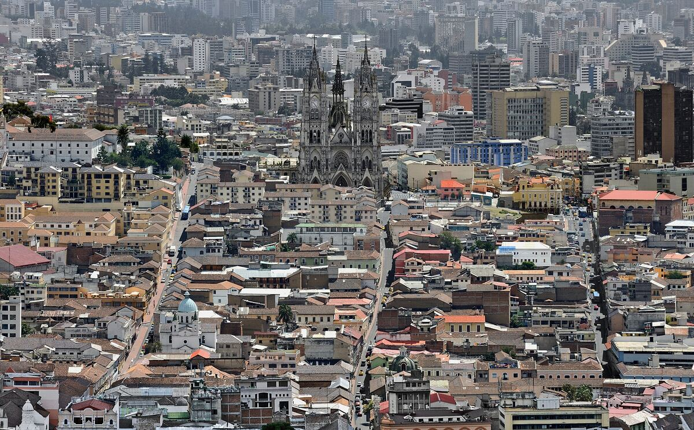
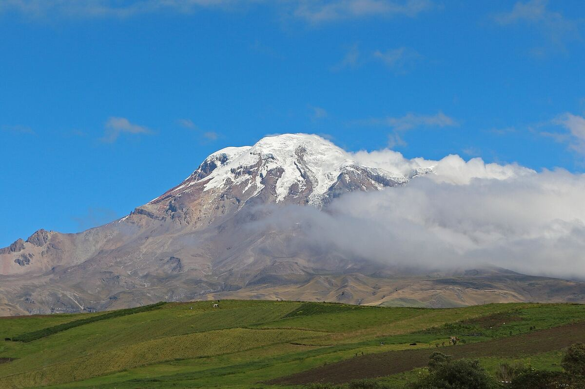

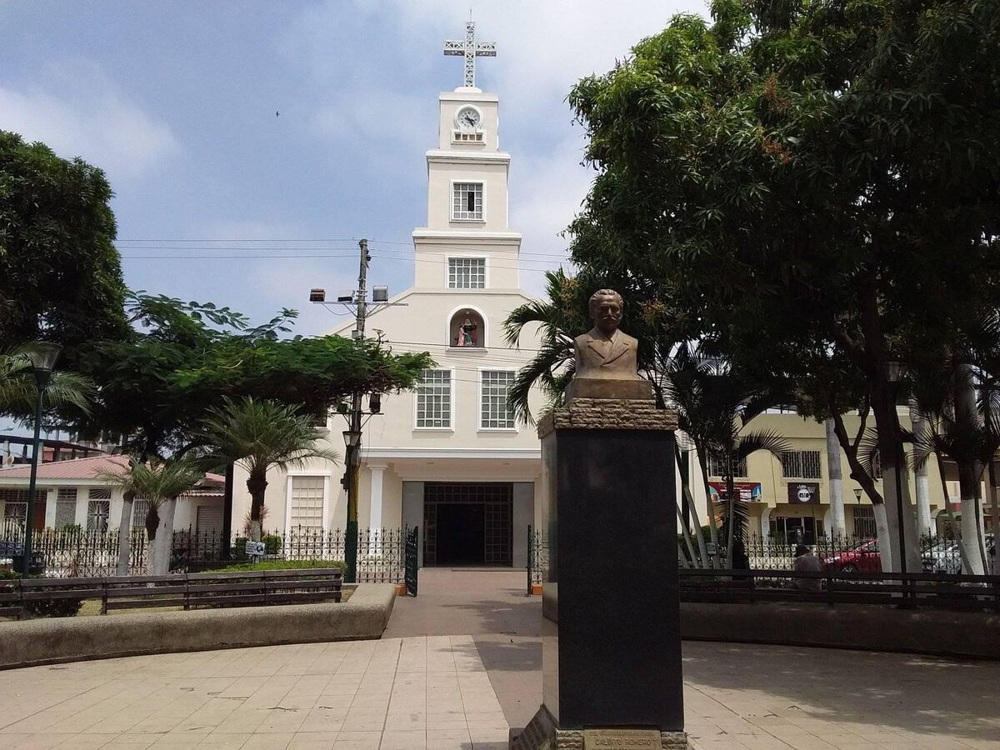
04 · Nuestra comida
Algunos platos con los que crecimos.
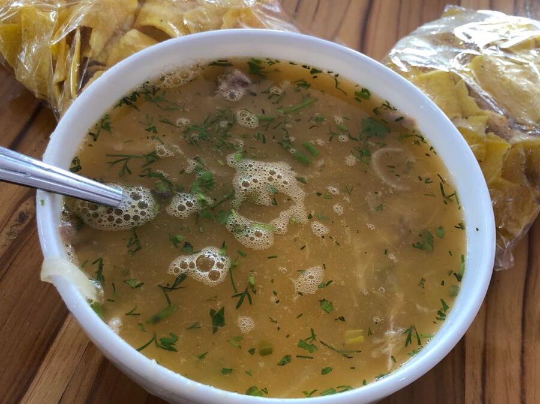
Albacora, yuca y cebolla curtida.
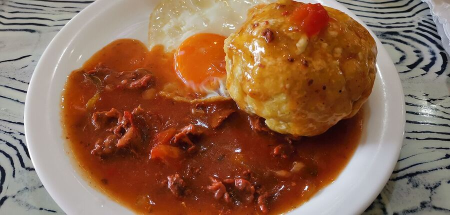
Plátano verde frito y majado.
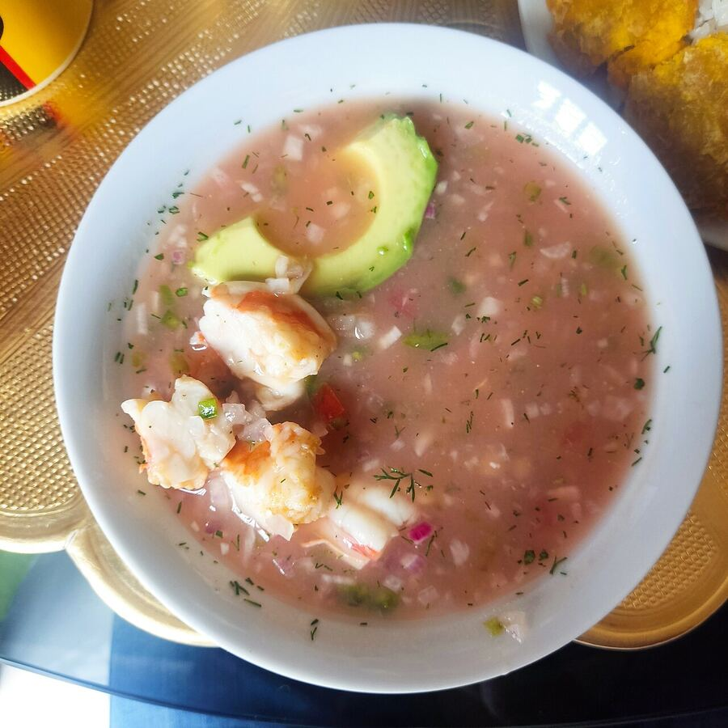
Camarón en un caldo frío de limón.
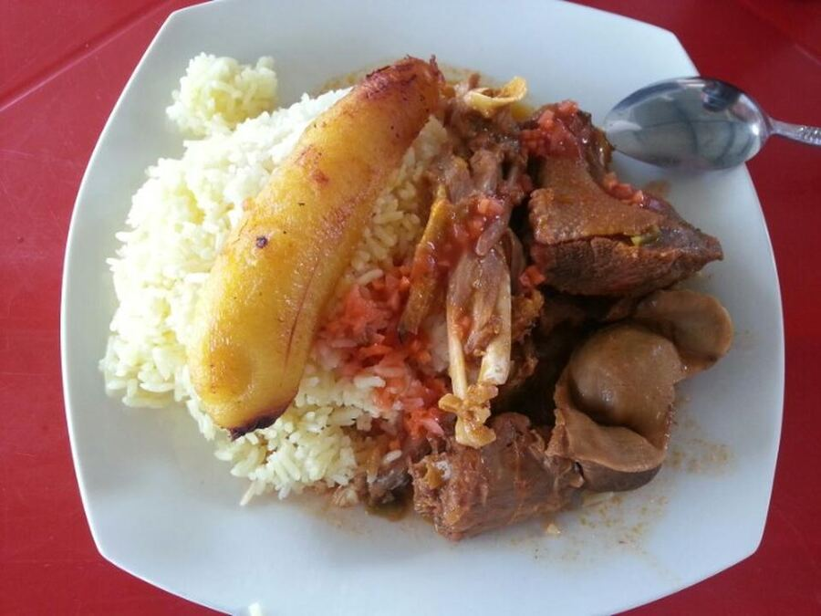
Chivo cocinado lentamente.
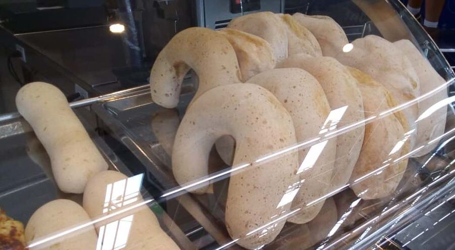
Panecitos suaves de almidón de yuca y queso.
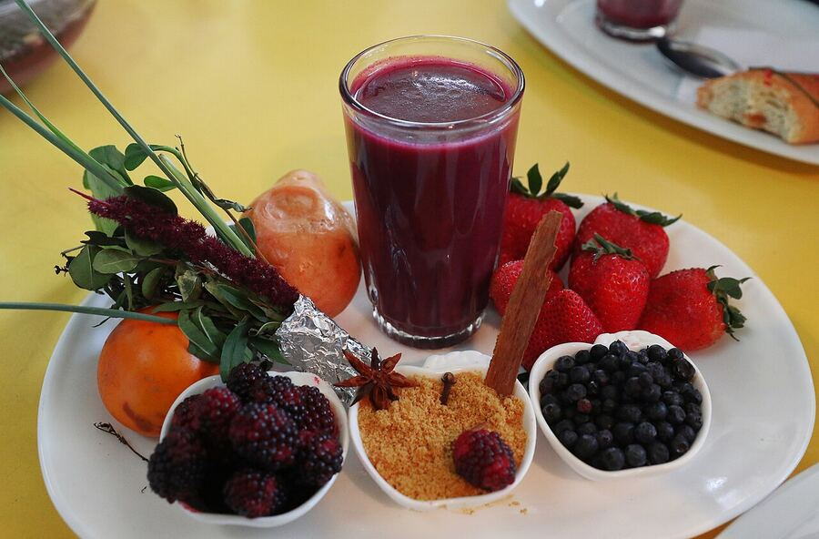
Bebida espesa y especiada de maíz negro.
¡Buen provecho!
05 · Nuestra casa
Una ciudad junto al río en la provincia del Guayas.
06 · Quiénes somos
Jóvenes líderes de Samborondón.
Directiva
07 · Ecuador × el mundo
Algunas ideas para hermanarnos.
Compartir nuestros membretes oficiales.
Llamadas conjuntas.
Un proyecto juntos.
Seguirnos en redes sociales.